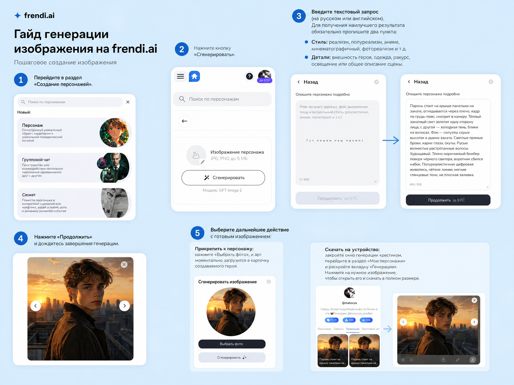
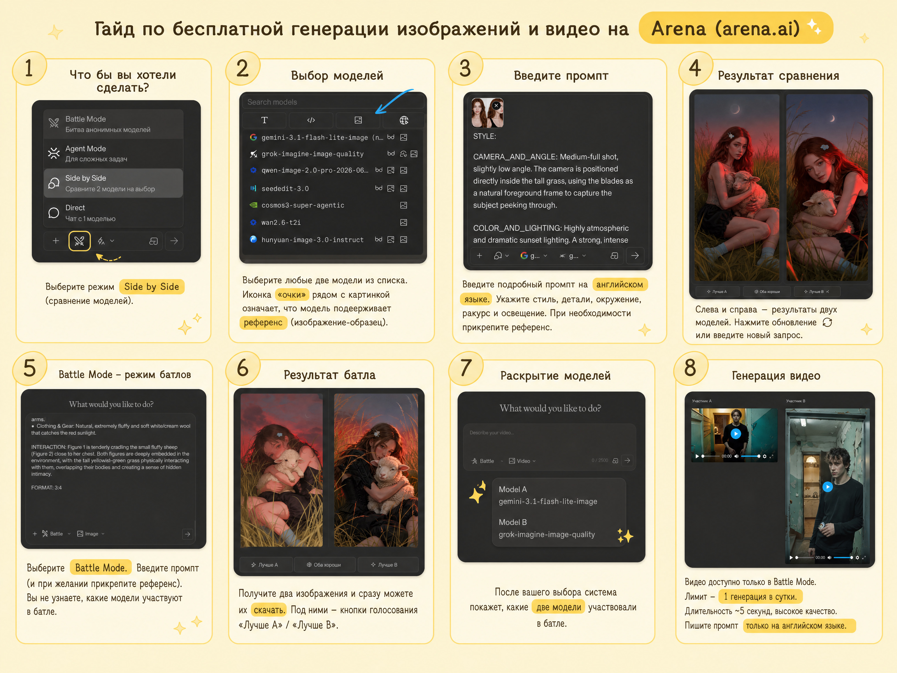
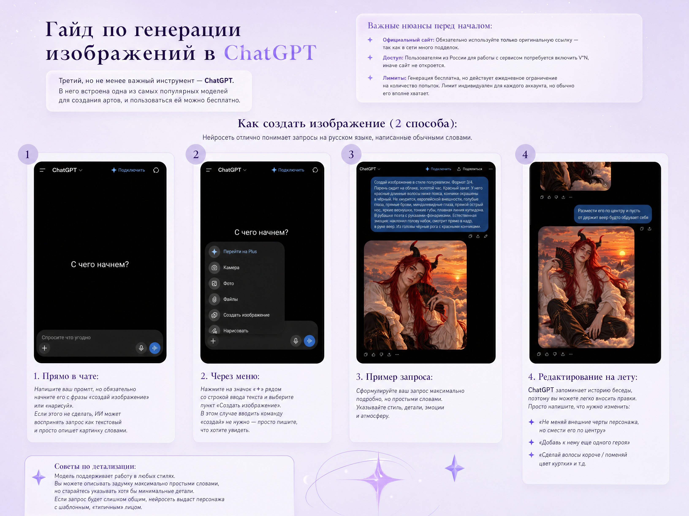
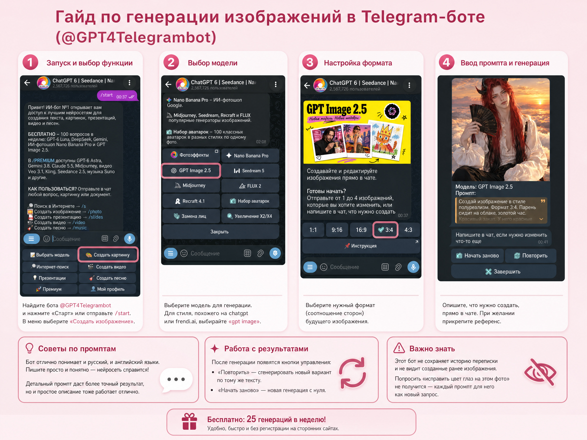

Гайд по генерации изображений и видео для ваших ботов
Привет! Я Матти (matovya). В этом руководстве я собрала 4 проверенные площадки, где я сама создаю аватарки и видео-обложки для своих персонажей на Frendi.ai, а также свои рабочие приёмы, шаблоны промптов и советы по свету и анатомии лица.
Бот-помощник для создания промптов
Не знаешь, как правильно описать внешность, ракурс, анатомию лица или сложный кинематографичный свет? Я создала специального бота-помощника! Просто опиши ему свою задумку своими словами, и он соберёт для тебя детальный профессиональный промпт (на русском или английском языке) под любую из площадок ниже.
1. Генерация прямо на Frendi.ai
На самом сайте Frendi.ai прямо во время создания или редактирования бота есть встроенный генератор изображений. Это самый быстрый способ сгенерировать аватарку без перехода на сторонние ресурсы.

Как сгенерировать изображение пошагово:
Открой генератор аватара
Перейди в раздел создания персонажа и в блоке «Аватар» нажми кнопку «Сгенерировать».
Проверь модель генерации
Внутри по умолчанию установлена модель GPT Image 2.
Введи промпт (до 500 символов)
Опиши персонажа в поле ввода. Так как лимит составляет 500 символов, пиши только самое важное: стиль, черты лица, причёску, одежду, ракурс и освещение.
Запусти генерацию
Нажми красную кнопку со стрелочкой справа от поля ввода и подожди несколько секунд, пока появятся готовые варианты.
Выбери фото или скачай оригинал из профиля
Ты можешь сразу прикрепить арт к боту кнопкой «Выбрать фото» либо скачать его в полном размере через свой профиль: зайди в «Мои персонажи» → «Генерации».
Примеры генераций на Frendi.ai (GPT Image 2):
Фэнтези-образ на закатных облаках (GPT Image 2)
Портрет с контровым закатным светом (GPT Image 2)
2. Сайт Arena (arena.ai)
Arena.ai — бесплатная платформа, где собраны топовые нейросети для генерации как картинок, так и коротких видео. Работает с включённым V*N, а запросы лучше писать на английском языке.
Открыть arena.ai
- • 3 режима сверху:
- — Battle: две случайные модели генерируют 2 картинки вслепую на выбор.
- — Side by Side: ты сама выбираешь 2 конкретные нейросети и сравниваешь их результат.
- — Direct: генерация одной выбранной моделью.
- • Значок «очков» возле модели: показывает, что эта нейросеть умеет принимать картинку-референс (через кнопку «+» в поле ввода).
- • Нажми на иконку Video под строкой ввода промпта.
- • Только в режиме Battle Mode: генерация видео доступна исключительно в режиме «Battle» (выбрать конкретную видео-модель вручную нельзя).
- • Оживление фото: нажми «+», прикрепи готовую аватарку персонажа и напиши на английском, какое движение нужно сделать (например, лёгкая улыбка, ветер в волосах, взгляд в камеру).
- • Лимит: бесплатно даётся 1 видео-генерация в день (ролик длится около 5 секунд, сразу в 2 вариантах от двух моделей).
Примеры генераций в Arena.ai (один промпт в разных моделях):
Художественный семи-реализм с закатным контровым светом
Мягкий фотореализм по тому же промпту (Side by Side)
3. ChatGPT (chatgpt.com)
ChatGPT отлично понимает длинные промпты на русском языке, держит контекст беседы и позволяет дорабатывать уже сгенерированную картинку простыми сообщениями в чате.
Открыть ChatGPT
Два способа запустить генерацию:
- 1. Прямо в обычном чате: начни своё сообщение со слов «Создай изображение...» или «Нарисуй...», а через кнопку «+» при желании прикрепи фото-референс.
- 2. Через меню инструментов: нажми на кнопку «+» слева от поля ввода и выбери пункт «Создать изображение» (или открой вкладку «Изображения» в боковой панели).
Как избежать «шаблонных» лиц и править детали:
- • Прописывай анатомию лица: чтобы ChatGPT не делал одинаковые базовые лица, обязательно уточняй форму скул, разрез глаз, форму носа, губ и челюсти.
- • Правки прямо в диалоге: если арт почти идеальный, просто напиши следом: «Оставь всё так же, но сделай взгляд спокойнее» или «Поменяй цвет рубашки на чёрный».
Примеры генераций в ChatGPT (сохранение внешности и деталей):
Детальная проработка костюма и света в вертикальном формате
Смена позы и крупности плана с сохранением черт лица
4. Телеграм-бот @GPT4Telegrambot
Удобный бот прямо в Telegram, где собраны GPT Image 2.5, Nano Banana Pro, Midjourney, Seedream 5, FLUX 2 и Recraft 4.1. Отличный вариант, когда нужно быстро сгенерировать арт с телефона без V*N.
Открыть @GPT4Telegrambot
Как пользоваться ботом пошагово:
Запусти бота и открой меню картинок
Отправь команду /start, затем нажми кнопку «Создать картинку» (или введи команду /photo).
Выбери нейросеть
Для создания проработанных персонажей отлично подходит «GPT Image 2.5» (также в меню доступны Nano Banana Pro, Midjourney, Seedream 5, FLUX 2, Recraft 4.1).
Укажи формат 3:4 и отправь промпт
Выбери вертикальное соотношение сторон 3:4 (идеально под карточку бота) и отправь текст промпта. При желании прикрепи от 1 до 4 фото-референсов одним сообщением с подписью.
Кнопки «Повторить» и «Начать заново»
Под готовым артом появятся кнопки: «Повторить» (сделает ещё один вариант по тому же запросу) и «Начать заново». Учти, что бот не помнит предыдущие сообщения, поэтому каждый раз отправляй полный промпт целиком.
Примеры генераций в @GPT4Telegrambot:
Детализированный полуреализм с мягким закатным светом
Стилизация в духе аниме / манхва семи-реализма (формат 3:4)
Лайфхаки и базовые шаблоны промптов
Не пиши просто «красивый парень» или «милая девушка» — нейросеть выдаст шаблонное лицо. Указывай конкретику: острые скулы, миндалевидные глаза с поволокой, прямой нос, чёткая линия челюсти, лёгкие веснушки на переносице.
ИИ очень любит делать мужским персонажам слишком агрессивные, нахмуренные лица. Чтобы лицо выглядело живым и притягательным, добавляй в промпт: «не хмурится, брови расслаблены, естественная спокойная эмоция».
Плоский дневной свет делает арт скучным. Всегда задавай два источника или драматичное освещение: тёплый закатный контровой свет по контуру волос, глубокие мягкие тени на половине лица, холодный неоновый рефлекс.
В самом начале запроса пиши «Создай изображение в формате 3:4» и задавай стиль: полуреализм (semi-realism), цифровая живопись с видимыми мазками, дарк-фэнтези или кинематографичный портрет.
Базовые стартовые шаблоны (на русском языке)
Подставь свои значения вместо текста в квадратных скобках [...] и нажми кнопку копирования.
Создай изображение в формате 3:4, стиль — детализированный полуреализм (semi-realism). На портрете по пояс изображён [возраст и пол/тип персонажа], [причёска, цвет и длина волос]. Черты лица: [форма скул и челюсти], [разрез и цвет глаз], [форма носа и губ], [особые приметы: веснушки / шрам / родинка]. Выражение лица: [спокойная полуулыбка / задумчивый взгляд], не хмурится, естественная эмоция. Одет в [описание одежды и аксессуаров]. Фон: [описание локации и времени суток]. Освещение: кинематографичный контрастный свет, [тёплый закатный контровой свет по контуру волос / неоновые блики], глубокие мягкие тени на лице, высокая детализация кожи и прядей волос.
Создай изображение в формате 3:4, художественный полуреализм с мягкой текстурой мазков. В кадре [описание персонажа, его поза и действие, например: сидит на крыше / держит в руках предмет]. Лицо: [чёткие скулы, форма глаз и цвет радужки, форма губ], не хмурится, естественная живая эмоция, взгляд направлен в камеру. Волосы: [цвет и текстура волос, лёгкое движение от ветра]. Одежда: [детали костюма, фактура ткани]. Атмосфера и свет: [закатное небо / сумерки / туман], выразительный контровой свет, тёплые блики на коже и контрастные глубокие тени.
Эти шаблоны — базовая основа. А чтобы получить детальный промпт с ювелирной настройкой света, ракурса и стиля (на русском или английском), открой моего бота-помощника!